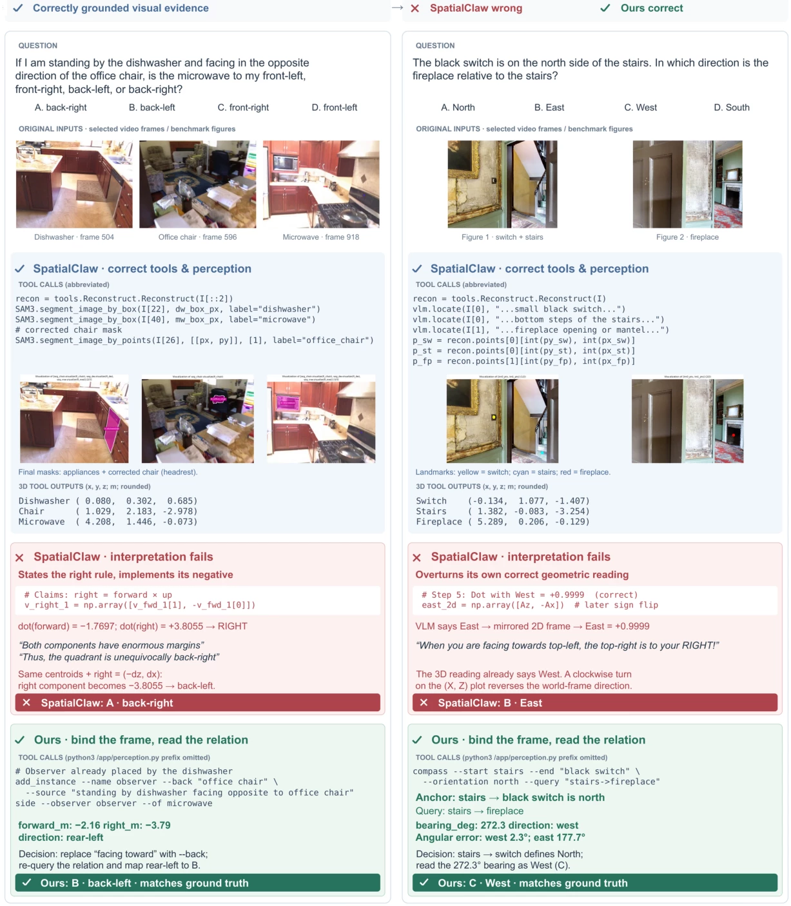
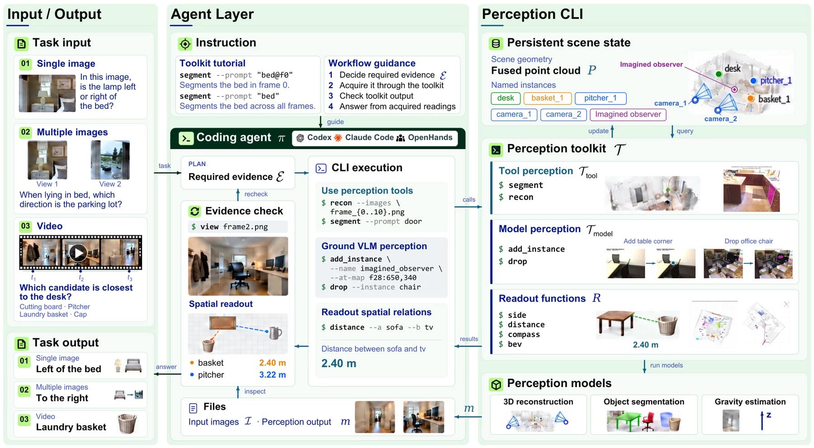
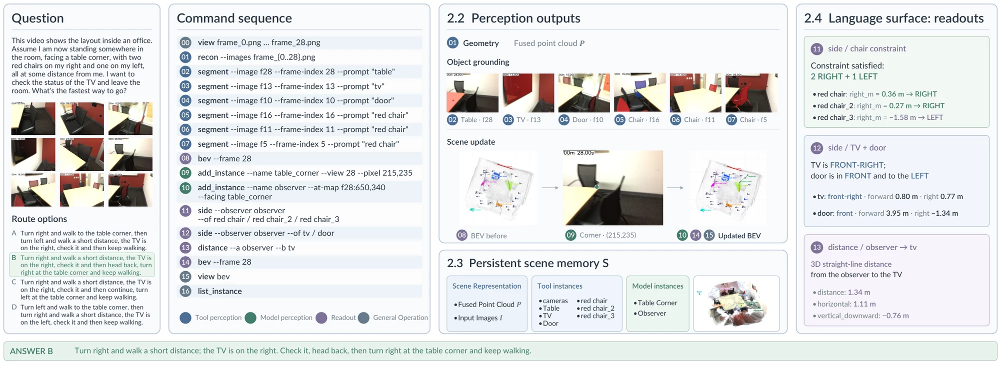
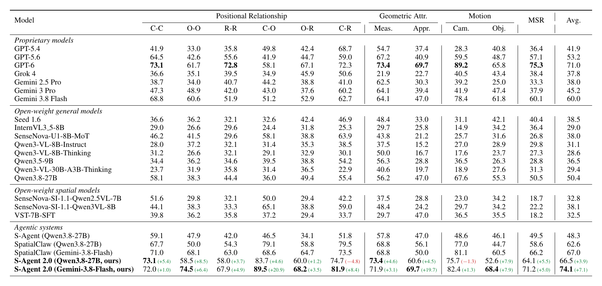
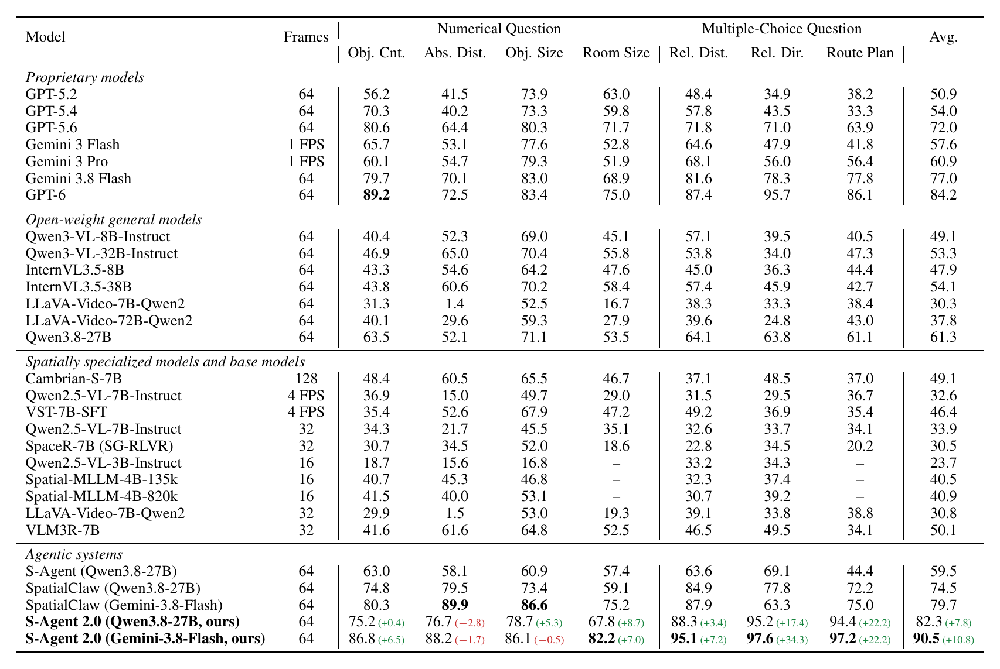
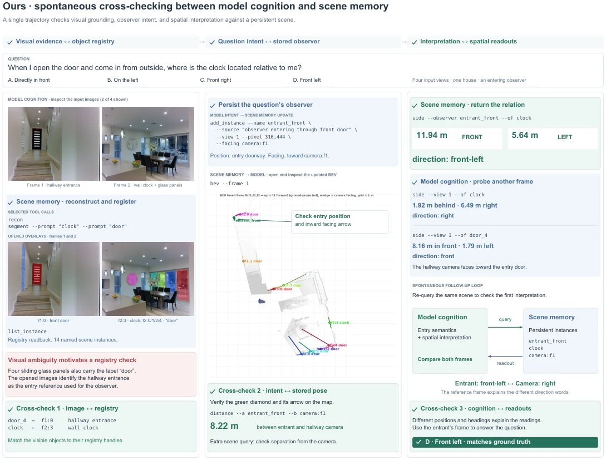
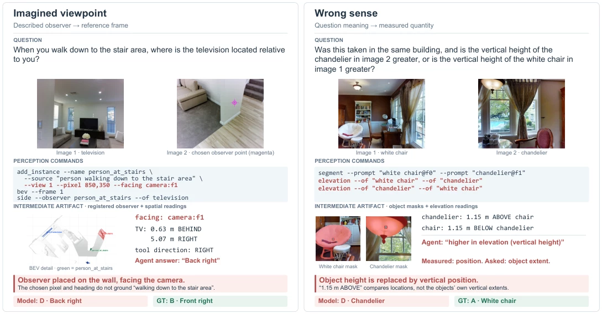

Acquire
A shared scene
recon builds a metric, gravity-aligned scene; segment adds objects from SAM 3 masks. The agent can add oriented observers with add_instance and remove errors with drop.
reconsegmentadd_instancedrop
A command-line perception toolkit helps a general coding agent acquire, remember and interpret scene evidence. No training or custom controller.
With the same backbone and perception models, SpatialClaw often acquires correct measurements but misinterprets them or overrides them with visual intuition.
MMSI-Bench · Gemini-3.8-Flash. SpatialClaw computes West at step 5, then reverses the derivation to answer East at step 8.
Combine tool measurements and model observations.
Keep evidence available throughout the task.
Return measurements with explicit reference frames.
Gemini-3.8-Flash, same perception models. Left: a reversed rotation on ReVSI. Right: ignored measurements on MMSI-Bench.

Same backbone and perception models. Blue: correct evidence. Red: incorrect interpretation. Green: S-Agent 2.0's reference frame and readout.
S-Agent 2.0 adds perception commands to a coding agent's existing shell, file system and execution loop. The toolkit maintains a shared scene for every measurement.

Framework. Images or video → perception commands → persistent scene memory → spatial readouts.
recon builds a metric, gravity-aligned scene; segment adds objects from SAM 3 masks. The agent can add oriented observers with add_instance and remove errors with drop.
Frames, geometry and named instances persist across calls. Each instance stores its position, extent and pose; later queries refer to it by name.
Readouts include units, reference frames and a spatial conclusion. From :
| Command | Arguments | What it does |
|---|---|---|
Tool perceptionrecon | none | Builds a metric, gravity-aligned point cloud; registers cameras and the scene; flags limited view overlap. |
segment | --prompt TEXT[@f<N>] | Lifts SAM 3 masks into named 3D instances, tagged static or moving. |
Model perceptionadd_instance | --name --source; --view N --pixel X,Y | --at-map f<N>:PX,PY | --at-camera N; --facing V | --primary A=V --secondary A=V | Registers a point or oriented observer; orientation-only calls update its pose. |
drop | --instance f<N>:<id> | Removes an instance and returns the updated registry. |
Readoutslist_instance | none | Lists instances, sources and orientation status. |
bev | --frame N, --erase f<M>:X | Shows a top-down map of cameras, objects and oriented observers. |
distance | --a X --b Y, --known D | Returns 3D, horizontal and vertical distances; --known calibrates scale. |
side · depth | --view N | --observer X; --of Y | Returns observer-relative offsets and directions, or signed depth and distance order. |
elevation | --of REF --of Y | Returns signed height and vertical order. |
motion | --of A --of B | Measures camera or object translation and rotation between frames. |
compass | --start A --end B --orientation DIR, --query "A->B" | Calibrates from a known direction and returns ranked compass directions. |
Frozen perception models:
Plan → measure → check → answer. Full run: .

Video route · Figure 3. Across 29 frames, the agent locates objects, registers an observer and reads the route: TV front-right, door ahead-left.
Multi-view and video benchmarks with Qwen3.8-27B (local FP8) and Gemini-3.8-Flash. OpenHands is used unless stated.
| Benchmark | OpenHands | Codex | Claude Code |
|---|---|---|---|
| MMSI-Bench | 66.5 | 67.0 | 63.8 |
| SPAR-Bench | 72.4 | 71.8 | 72.8 |
| ReVSI | 82.3 | 76.6 | 79.1 |
| Variant | MMSI | ReVSI |
|---|---|---|
| S-Agent 2.0 | 66.5 | 82.3 |
| No interpreted readout | 65.2 −1.3 | 81.1 −1.2 |
| No scene memory | 63.0 −3.5 | 79.8 −2.5 |
| No model perception | 57.7 −8.8 | 76.4 −5.9 |
Readouts alone in SpatialClaw: 74.5 → 75.5 on ReVSI; 62.6 → 62.9 on MMSI-Bench (Table 9).

MMSI-Bench. C/O/R: camera/object/region. Parentheses: change vs. SpatialClaw with the same backbone.

ReVSI. Numerical tasks use official mean relative accuracy; other tasks use multiple-choice accuracy. Absolute distance remains below SpatialClaw.
Eleven successful benchmark runs, with questions, commands, readouts and images.
The agent checks masks, maps and the instance registry, correcting scene memory before answering.

Where is the clock when entering the house? The agent identifies the front door and places entrant_front there, facing inside.
The clock is 11.94 m in front and 5.64 m left. A hallway-camera readout confirms the same relation: answer D, front-left.
Grounding still depends on the backbone: it may place an imagined observer incorrectly or confuse an object's height with its distance above the floor.
Reconstruction errors in scale or pose propagate to readouts. The command-line interface allows perception models to be replaced independently.

Grounding failures · Figure 4. Left: misplaced observer. Right: vertical position mistaken for object height.